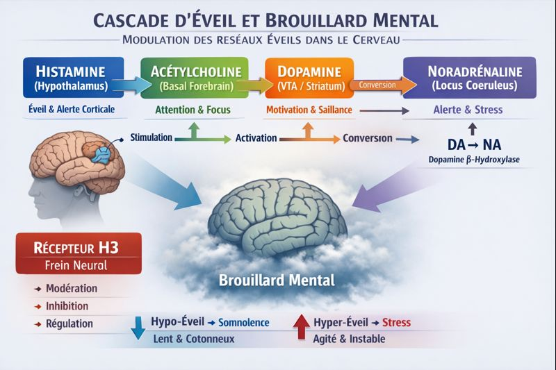

Brouillard mental : ce qui se passe vraiment dans votre cerveau
Tête dans le coton, pensées qui patinent, incapacité à vous concentrer — ce n'est pas "dans la tête". C'est une question de neurochimie, et ça s'explique.
📖 Termes de référence
- Brouillard mental = Brain fog
- Malaise post-effort (MPE) = Post-Exertional Malaise (PEM)
Ce que vous ressentez a un nom, et une biologie
Le brouillard mental est l'un des symptômes les plus fréquents dans le Covid long, la fibromyalgie et la fatigue chronique. Il est souvent minimisé ou attribué à "l'anxiété". Pourtant, il correspond à une réalité physiologique : un déséquilibre des systèmes d'éveil du cerveau.
Comprendre ce déséquilibre, c'est la première étape pour mieux le repérer et en parler avec un professionnel de santé.
La cascade d'éveil : quatre messagers clés

Pour rester fonctionnel, votre cerveau jongle en permanence avec quatre neurotransmetteurs qui forment la cascade d'éveil :
- Histamine — le signal de départ. Elle assure l'éveil de fond et maintient la vigilance de base.
- Acétylcholine — le filtre attentionnel. Elle aide à trier les informations pertinentes et à rester concentré sur une tâche.
- Dopamine — le moteur motivationnel. Elle détermine ce qui mérite l'effort et ce qui est important.
- Noradrénaline — l'amplificateur. Elle gère l'intensité de la vigilance et la réponse au stress.
Le brouillard n'apparaît pas forcément parce que l'un de ces messagers manque. Il s'installe quand le ratio entre eux se dérègle — quand la balance penche trop d'un côté ou de l'autre.
Deux types de brouillard — et pourtant si semblables
Deux états opposés peuvent produire le même ressenti :
"Tête dans le coton". Systèmes sous-activés. Lenteur, somnolence, pensées floues. Vous avez envie de dormir mais le repos ne récupère pas.
"Cerveau électrique". Systèmes en surchauffe. Trop de stimulations, trop de bruit interne — le brouillard s'installe par saturation. Épuisé et incapable de "couper" en même temps.
Ces deux états peuvent coexister dans la même journée. C'est notamment ce qui rend le Covid long si déroutant.
Le brouillard mental n'est pas un échec de volonté. C'est un signal que le système d'éveil est en déséquilibre — et que la charge cognitive dépasse la marge disponible ce jour-là.
Le rôle du récepteur H3 : le frein neuronal
Le récepteur H3 agit comme un frein neural : il régule la libération d'histamine et, par cascade, l'activité des autres systèmes d'éveil. Quand ce frein fonctionne mal — comme chez certaines personnes atteintes de Covid long ou de dysautonomie — le système peut basculer sans prévenir : d'un réveil correct à une saturation cognitive en quelques heures.
L'aggravation du brouillard à la position debout s'explique par une composante orthostatique : la redistribution sanguine au lever réduit la perfusion cérébrale, aggravant le déficit d'éveil déjà présent. De même, un petit-déjeuner glucidique provoque un pic insulinique qui redistribue le flux sanguin vers le territoire splanchnique — creusant temporairement l'hypoperfusion cérébrale.
Pourquoi forcer n'aide pas
Forcer l'attention en saturation aggrave souvent le brouillard le lendemain — le crash J+1/J+2 bien connu dans le Covid long et la fatigue chronique.
Ce qui aide, c'est d'apprendre à repérer ses propres patterns :
- À quel moment de la journée le brouillard est-il le plus présent ?
- Quels déclencheurs l'amplifient — écrans, bruit, interactions sociales, effort physique ?
- Quel est le délai entre l'effort et l'apparition du brouillard ?
- Vous êtes plutôt "lenteur" (hypo-éveil) ou "saturation" (hyper-éveil) ?
🧭 Suivre la clarté mentale pour y voir plus clair
Boussole inclut la clarté mentale comme l'une des quatre métriques quotidiennes. En notant cette donnée chaque jour, vous pouvez identifier des tendances sur 30 jours — des patterns, des corrélations avec le sommeil ou l'activité, des signaux précoces avant un jour difficile. Pas pour poser un diagnostic, mais pour objectiver ce que vous ressentez et en parler avec des données concrètes.
Essayer Boussole gratuitementSources
- Theoharides TC et al. Mast cells, brain inflammation and autism. Neuroscience & Biobehavioral Reviews, 2019.
- Komaroff AL. ME/CFS and the biopsychosocial model. Journal of General Internal Medicine, 2019. PMC6318204
- Dani M et al. Autonomic dysfunction in long COVID. Clinical Medicine, 2021. PMC7850225
- Hellmuth J et al. Persistent COVID-19-associated neurocognitive symptoms. J Neurovirol, 2021. PMC8081510
- Winkler AS et al. Histamine receptor dysfunction in fatigue syndromes. European Journal of Neurology, 2010.
- Mukai T et al. A meta-analysis of inositol for depression and anxiety disorders. Human Psychopharmacology, 2014. PMID 24424706